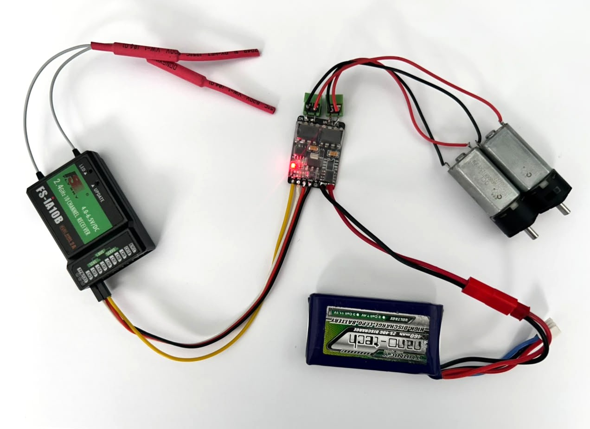
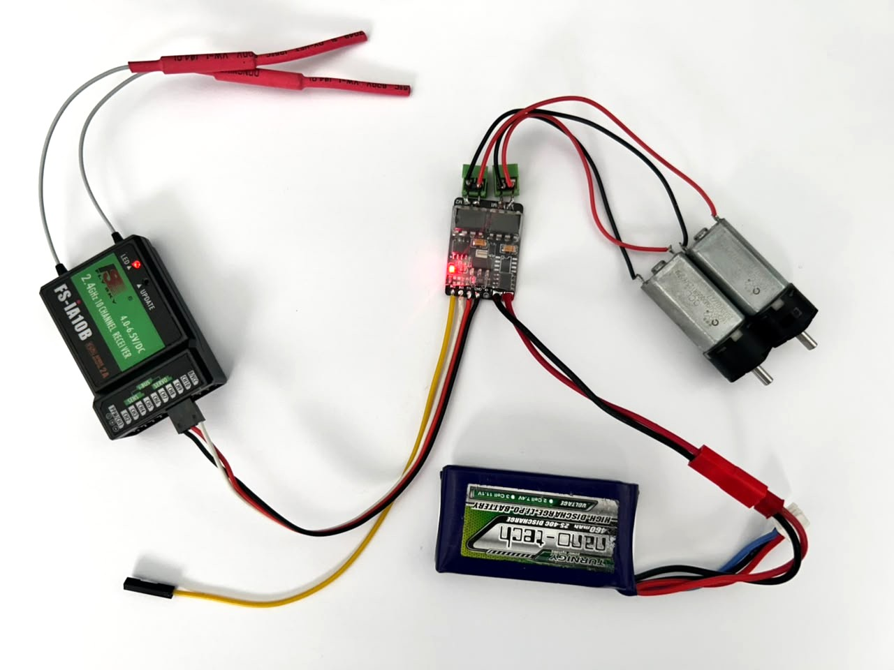
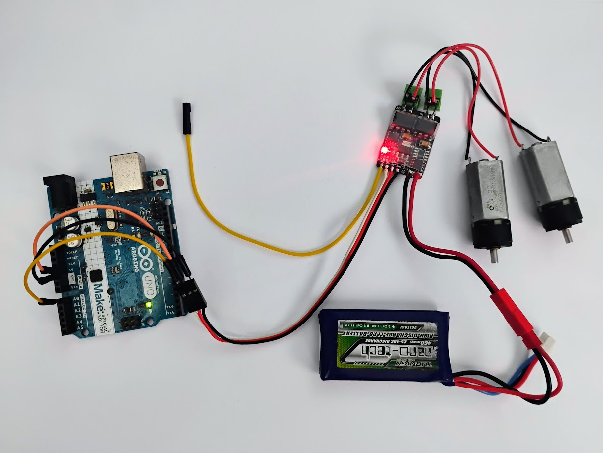
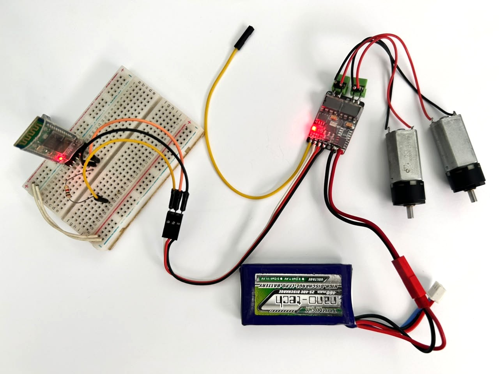
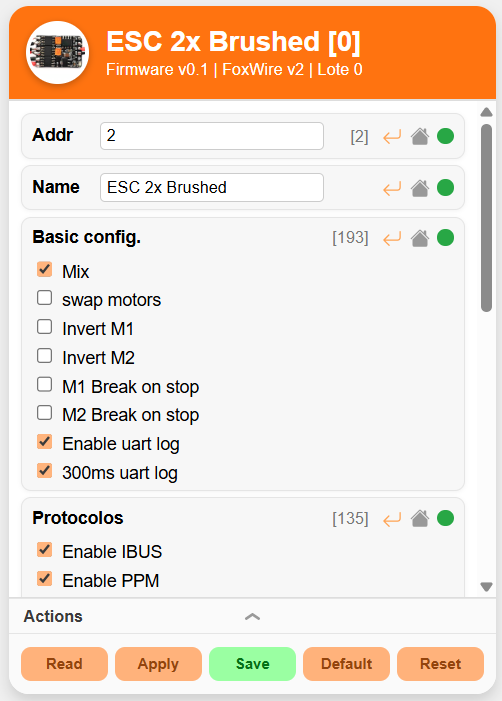
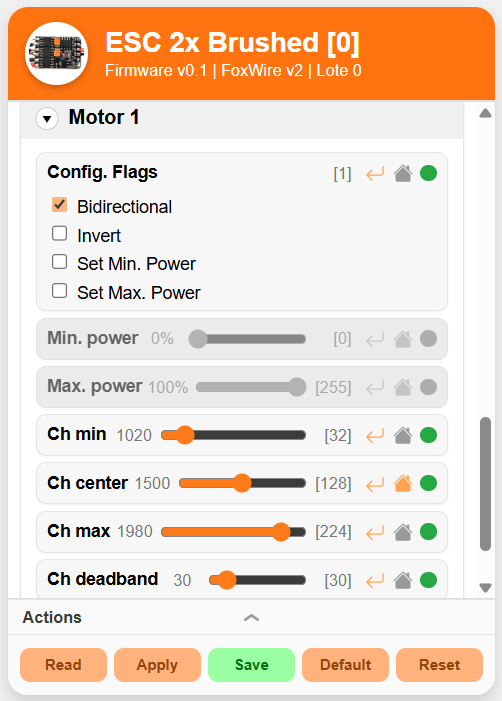
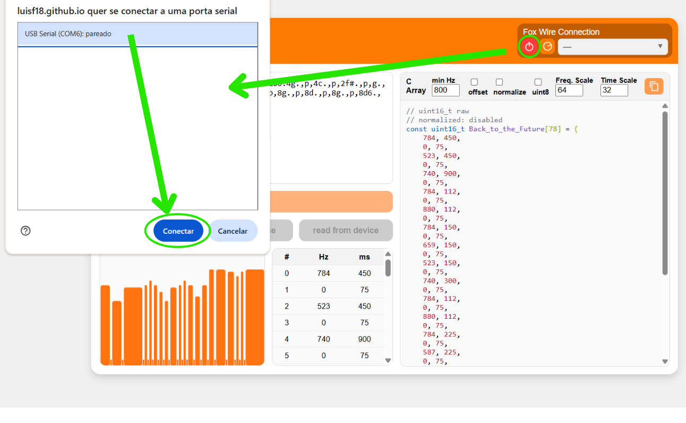
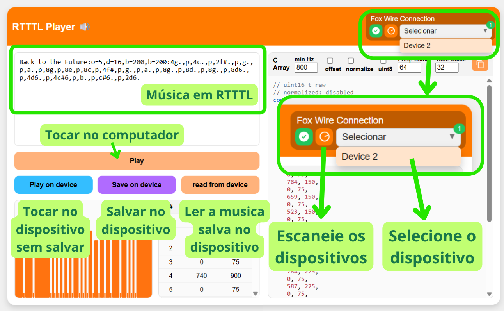

ESCs brushed duplo
ESCs para dois motores escovados multiprotocolo, configuravel e com música.
Características Técnicas
| Modelo | Tensão | Bateria | Corrente | BEC |
|---|---|---|---|---|
| ESC Brushed 2 x 1.5A | 6V até 10V | 2S | até 1.5A por motor | 5V 500mA |
| ESC Brushed 2 x 3A | 6V até 15V | 2 a 3S | até 3A por motor | 5V 200mA |
| ESC Brushed 2 x 5A | 6V até 14V | 2 a 3S | até 5A por motor | 5V 500mA |
ESC 2x5A Brushed

ESC 2x3A Brushed

ESC 2x1.5A Brushed

Protocolos e compatibilidade
- Sinal PWM de servo
- PPM
- IBUS
- FoxWire
- UART (Módulos Bluetooth também)
Sinal PWM de servo
Canal 1: Sinal de sero PWM 1
Canal 2: Sinal de sero PWM 2

Sinal IBUS
Canal 1: Sinal IBUS
Canal 2: Telemetria UART TX com baudrate de 115200 (se não quiser não precisa usar)

Sinal PPM
Canal 1: Sinal PPM
Canal 2: Telemetria UART TX com baudrate de 115200 (se não quiser não precisa usar)
Controle via UART
Baudrate: 115200
Canal 1: RX / TX
Canal 2: TX (Telemetria ou respostas, se não quiser não precisa usar)

Com HC-05 e outros modulos Bluetooth
Baudrate: 115200
Canal 1: RX / TX
Canal 2: TX (Telemetria ou respostas, se não quiser não precisa usar)

Comandos shell
O modo shell permite ler e alterar parâmetro e controlar a placa via comandos de texto enviados em UART com baundrate 115200. Ideal para integrar com projetos usando Arduino, ESP32 ou Raspbarry pi.
Funcionamento: cada vez que um comando de movimento é recebido o ESC executa o movimento e reinicia o contador de tempo do mecanismo de failsafe. Caso ultrapasse o tempo determinado pelo parâmetro "uart_failsafe" o esc desliga os motores.
uart_failsafe: O parametro uart failsafe é diferente do failsafe geral usado pelos outros protocolos. ele pode ser ajustado de 0 a 2000 ms. Caso ele seja igual a zero ele é desativado, ou seja, o mecanismo de failsafe não desliga os motores se parar de receber comandos.
Sintaxe: Existem duas formas de usar o modo uart.
- Acionando o modo Shell: toda vez que o reiniciar a placa pra iniciar a comunicação deve acionar o modo shell enviando "FOX-SHELL" em seguida ele deve responder com "FOX-SHELL-INIT" informando assim que iniciou. Depois basta enviar qualquer comando da tabela que ele irá aceita.
- Modo Bluetooth (por prefixo): Envie "FX-" seguido pelo comando, por exemplo: "FX-pwm -2000 2000" ou "FX-stop". Dessa forma dispenssa inicialização com "FOX-SHELL" no entanto é necessário que a opção "BLUETOOTH" esteja habilitada no campo de protocolos da configuração. Existe ainda a variação "FX0-...". Ao colocar 0 informa que a resposta ao comando deve ser enviado no mesmo fio, enquanto "FX-" ele responde no outro pino de canal.
| Comandos | uart_failsafe | Função |
|---|---|---|
| FOX-SHELL | não muda | Inicia a comunicação em modo shell |
move v1 v2 t |
não muda | Movimenta os motores com as velocidade v1 e v2 (de -2000 a 2000) durante t milisegundos depois para os motores. |
move_ch ch1 ch2 t |
não muda | Movimenta os motores com as velocidade usando ch1 e ch2 (de 1000 a 2000) como entradas de canais durante t milisegundos depois para os motores. |
| off | reinicia | Desliga os motores |
| stop | reinicia | Freia os motores |
| fall | encerra | Encerra a conexão |
ch ch1 ch2 ... |
reinicia | Envia o valor de cada canal |
pwm v1 v2 |
reinicia | Envia o valor pwm de cada motor de -2000 a 2000 |
uart_failsafe t |
configura | Lê ou escreve o valor do failsafe da uart de 0 a 2000 ms |
sound n |
não muda | toca a musica de indice n0: Init 1: Connect 2: Disconnect 3: Beacon 4: Extra |
beep f_Hz count periode motor |
não muda | toca um beep de frequência (f_Hz) durante periode milisegundos depois desliga durante o mesmo intervalo e repete isso count vezes no motor (se quiser tocar os dois deixe sem esse parâmetro).Exemplo: "pi... pi... pi..." seria: beep 2000 3 200 |
| load | não muda | Carrega as configuração. Use caso altere elas ou reinicie o ESC. |
uart1 texto |
não muda | Imprime texto no pino de telemetria se ele estiver disponivel. |
| comandos padrão | - | Mais informações em Shell |
Configuração
Parâmetros gerais
| Parametros | Descrição |
|---|---|
| Addr | Endereço no protocolo FoxWire (de 0 a 31) |
| Name | Nome do dispositivo (até 16 caracteres) |
| Basic config. | - Mix: mixar os canais - swap motors: troca as entradas de motores - Invert M1 inverte o sentido de M1 - Invert M2 inverte o sentido de M2 - M1 Break on stop Aciona freio de M1 - M2 Break on stop Aciona freio de M2 - Enable uart log Aciona log no pino de canal ocioso - 300ms uart log Limita a 300ms o intervalor entre logs (recomendado) |
| Protocolos | Habilita os protocolos: IBUS, PPM e "Bluetooth" (comandos uart com "FX-" ou "FX0-") |
| Failsafe delay | Tempo de failsafe em milisegundos |
| UART Failsafe | Tempo de failsafe em milisegundos dos comandos de movimento via uart |
| Sound Volume | Volume do durante execução de musicas. [Atenção]: Se colocar um valor muito grande o motor prode acabar girando ao tocar a musica. - Sound On: aciona sons - Automatic volume compensation: Compensação automatica do volume em função da frequencia |
| Sounds config. | - Enable start sound: Habilita musica ao ligar o ESC - Enable connect sound: Habilita musica ao conectar - Enable disconnect sound: Habilita musica ao perder conexão - Use default sounds: Caso habilitado usa os sons padrão caso contrário usa os sons inseridos pelo usuario |
| Multi Channels | Nos casos de protocolos que forncem o valor de varios canais em um unico fio (como: IBUS, PPM ou UART) o ESC usa essa tabela para saber a função de cada canal. Caso um canal não seja usado coloque "--". - In1/rotation entrada 1 ou velocidade de rotação quando está mixado. - In2/speed entrada 2 ou velocidade linear quando está mixado. - Flip canal pra inverter o sentido de IN2: util pra caso o robô esteja de cabeça pra baixo - Max speed canal que controla a velocidade maxima dos motores - Sound Canal pra colocar um switch, quando acionado começa a tocar uma musica definida pelo usuario. - Move1 Quando acionado o esc executa o movimento 1 programdo pelo usuário. - Move2 Quando acionado o esc executa o movimento 2 programdo pelo usuário. |

Configurações de cada motor
| Parametros | Descrição |
|---|---|
| Config. Flags | - Bidirectional se o motor é bidirecional ou não. - Invert Inverte o sentido do motor. - Set Min. Power habilita a limitação de potência minima nos motores usando o parametro Min. Power - Set Min. Power habilita a limitação de potência maxima nos motores usando o parametro Max. Power |
| Min. power | Valor minimo de PWM que o motor irá receber. De 0 a 100%. Recomendado para remover a zona morta onde um PWM muito baixo não suficiente para mover o motor. |
| Ch min | Valor minimo do canal de entrada. |
| Ch center | Valor central do canal de entrada. Nele o motor esta parado ou em freio. |
| Ch max | Valor máximo do canal de entrada. |
| Ch deadband | Zona de tolerância em torno do centro e dos limites do canal de entrada. Por exemplo: para o motor começar a se mover, o canal de entrada precisa ser maior que Ch max + Ch deadband. |

Ajustando Musica de inicio
Altere ou leia a musica de inicio do ESC usando a ferramenta de upload de musicas. A ferramenta aceita melodias em formato RTTTL.
Passo 1: Conecte a placa com a ferramenta.

Passo 2: Clique em escanear e selecione o dispositivo.
Passo 3: Toque no computador ou no dispositivo ou salve musicas em RTTTL.
